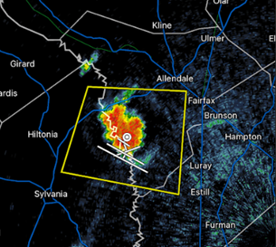
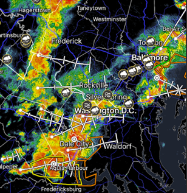
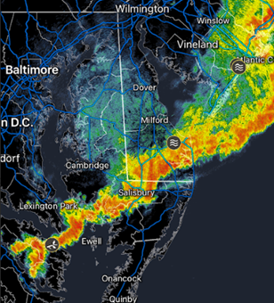
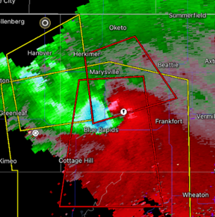
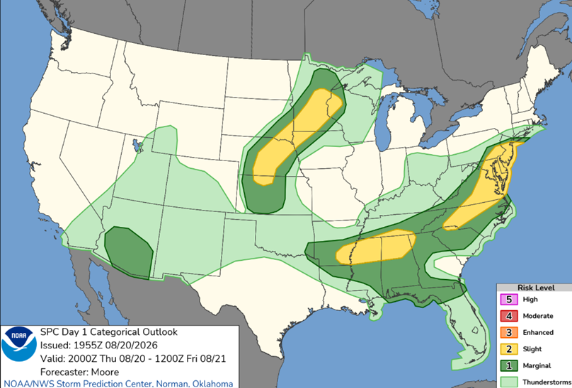

Storms
An overview of the atmospheric ingredients that fuel thunderstorms and other severe weather.
What Fuels a Thunderstorm?
Thunderstorms rely on a specific combination of atmospheric ingredients to form and grow. Click each ingredient below to learn more.
CAPE (Convective Available Potential Energy) measures the amount of energy available to fuel a rising air parcel. Higher CAPE values indicate a more unstable atmosphere, which allows storm updrafts to grow stronger and taller.
Values around 1,000–2,500 J/kg generally support thunderstorm development, while values above 2,500–3,000 J/kg indicate a more unstable atmosphere capable of supporting stronger, higher-end severe storms.
View CAPE on Pivotal WeatherWind shear is the change in wind speed and/or direction with height. It helps organize storms and tilt their updrafts, which can allow a storm to sustain itself longer and, in stronger cases, contributes to the rotation seen in supercells.
0–6 km bulk shear values around 20–35 kt generally support more organized multicell or supercell storms, while values above 40 kt further favor sustained rotation and higher-end severe weather potential.
View Wind Shear on Pivotal WeatherMoisture, often measured using dewpoint, supplies the water vapor needed to form clouds and precipitation. Higher low-level moisture generally supports stronger, more efficient thunderstorm development.
For severe thunderstorms, surface dewpoints generally need to reach at least 55°F to 60°F to supply basic moisture, while values of 65°F to 70°F or higher can provide significant moisture for more elevated risks.
View Moisture on Pivotal WeatherLift is the mechanism that triggers a rising air parcel in the first place. Common sources of lift include fronts, drylines, daytime heating, and terrain (orographic lift).
Weak lift may only produce isolated showers or non-severe storms, while strong, focused lift along a front or dryline can trigger more widespread and organized storm development.
Types of Storms
Not every thunderstorm is classified as "severe." The National Weather Service defines a thunderstorm as severe if it produces at least one of the following: wind gusts of 58 mph or greater or hail at least 1 inch in diameter (quarter-sized). A storm that doesn't meet any of these thresholds is simply considered a regular thunderstorm, even if it produces heavy rain, frequent lightning, or brief gusty winds. The four storm types below can each range from ordinary to severe depending on the ingredients present at the time.
Single-cell (or "pulse") storms are the most basic type of thunderstorm, consisting of a single updraft with no significant organization. They typically form in weak wind shear/high CAPE environments and are short-lived, usually lasting under an hour before the storm's own rain-cooled outflow cuts off its updraft. Single-cell storms can still produce brief heavy rain, small hail, and occasional gusty winds, but they generally pose the lowest severe weather risk of the four storm types.

Multi-cell storms are clusters of individual storm cells at various stages of development, often forming along or near a common boundary or source of lift. As one cell weakens, new cells can form along its outflow boundary, allowing multi-cell clusters to persist much longer than single-cell storms. This longer lifespan gives multi-cell storms more opportunity to produce stronger wind gusts, larger hail, and, in some cases, brief tornadoes.

A squall line is a long line of thunderstorms, often forming along or just ahead of a cold front. Squall lines are mainly known for producing widespread strong straight-line winds over a large area as they move through, and in some cases can even produce embedded rotation and brief QLCS-type tornadoes along the line.

Supercells are the most organized and dangerous type of thunderstorm, defined by a deep, persistent rotating updraft known as a mesocyclone. Strong wind shear allows this rotation to develop and sustain itself, sometimes for hours at a time. Supercells are responsible for the vast majority of significant tornadoes, as well as very large hail and extreme wind gusts.

How Meteorologists Track Storms
Before storms form, meteorologists examine whether the atmosphere contains the ingredients needed for severe thunderstorms, such as sufficient moisture, instability (CAPE), and wind shear. Meteorologists often use shorter-range CAMs (Convection-Allowing Models), which are weather models designed to explicitly simulate individual thunderstorms, squall lines, and other smaller-scale features rather than just broad areas of precipitation. By analyzing these models along with the atmosphere's thermodynamic and wind environment, meteorologists can create outlooks identifying areas where hazards such as tornadoes, flooding, and severe thunderstorms are more likely to develop. As storms begin to form, weather radar becomes one of the most important tools for tracking them. Meteorologists use radar to monitor storm location, intensity, movement, and rotation while comparing the observed storms with CAM forecasts to evaluate how well the models are verifying.
